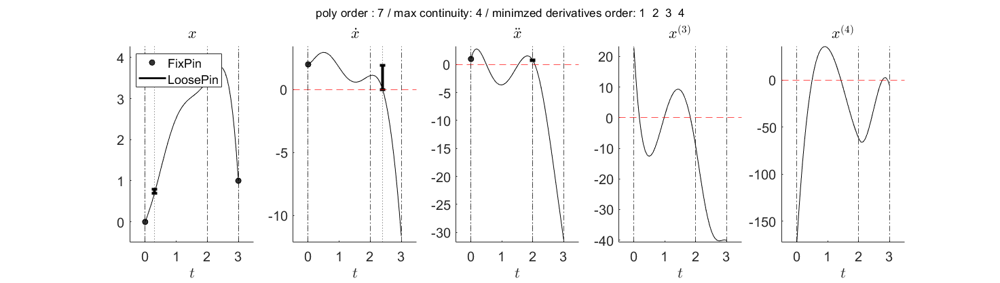

Contents
1-D example
1. Prameter setting
dim = 1; % dimension ts = [0 2 3]; % knots order = 7; % polynomial order optimTarget = 'poly-coeff'; % 'poly-coeff' or 'end-derivative' % optimTarget = 'end-derivative'; % 'poly-coeff' or 'end-derivative' maxConti = 4; % maximally imposed continuity between segment objWeights = [10 1 1 10]; % 1 2 3 4 th order derivatives % 2. Pin (FixPin or LoosePin) pin1 = struct('t',0,'d',0,'X',0); pin2 = struct('t',0,'d',2,'X',1); pin3 = struct('t',0,'d',1,'X',2); pin4 = struct('t',0.3,'d',0,'X',[0.7 0.8]); pin5 = struct('t',2,'d',2,'X',[0.7 0.8]); pin6 = struct('t',2.4,'d',1,'X',[0.0 1.9]); pin7 = struct('t',3,'d',0,'X',1); % 3. Generate trajectory object and path pTraj = PolyTrajGen(ts,order,optimTarget,dim,maxConti); % construct the functor pTraj.setDerivativeObj(objWeights); % set the objective function for penalizing the derivatives pTraj.addPinSet([pin1 pin2 pin3 pin4 pin5 pin6 pin7]); % impose pins tic pTraj.solve; % quadratic programming toc
Optimization will be performed on the coefficients. solving 1 th dimension.. 제약 조건을 충족하는 최솟값을 찾았습니다. 목적 함수가 최적성 허용오차의 값 이내에서 실현 가능한 방향에서 감소하지 않고 제약 조건이 제약 조건 허용오차의 값 이내에서 충족되기 때문에 최적화가 완료되었습니다. success! Done! 경과 시간은 3.795404초입니다.
4. Plot
figh = figure(2); clf titleStr1 = sprintf('poly order : %d / max continuity: %d / ',order,maxConti); titleStr2 = [' minimzed derivatives order: ', num2str(find(objWeights > 0))]; sgtitle(strcat(titleStr1,titleStr2)) set(figh,'Position',[193 294 1473 418]); pTraj.showTraj(4,figh)